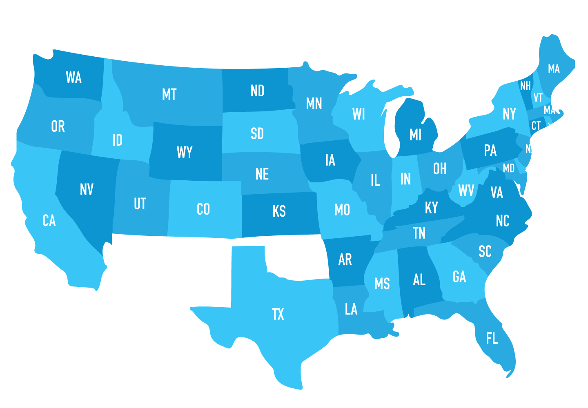
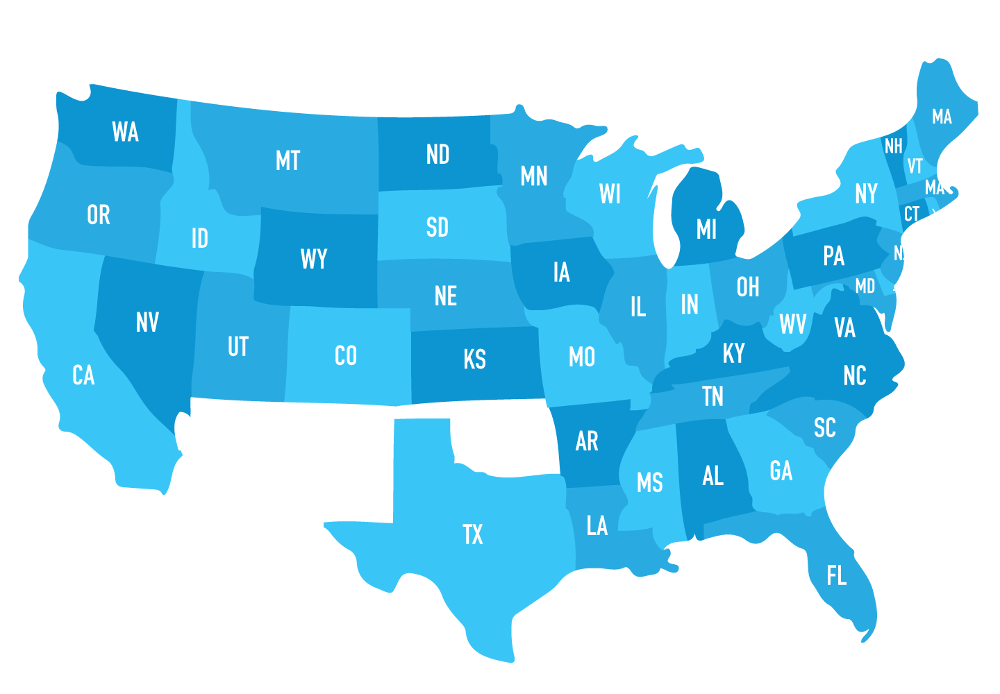

Period 6 experiences an overlap with Period 5 as it covers the end of the Civil War, the Reconstruction Era, and the Gilded Age. (AP: This is 13% of your exam as it overlaps with Period 5 so study up!)
-
Credit Mobilier
1867-1872
-
First Continental Railroad
1869
-
Knights of Labor
1869
-
Gilded Age
1870s-1890s
-
Chinese Exclusion Act
1882
-
AFL established
1886
-
Haymarket Square
May 4, 1886
-
Interstate Commerce Act
1887
-
Populist Party
1890
-
Homestead Act
1892
-
Plessy v. Ferguson
1896
The Gilded Age, a term coined by Mark Twain, is the concept that on the outside, America looked as good as gold, but in the depth of the nation, things weren’t as great as they seemed.
It starts off with the Industrial Revolution. Agrarian, rural societies transformed into industrial and urban ones. The government held more capitalistic views and began subsidies for transportation and communication systems. This, however, led to an increase in trusts and monopolies that will be discussed later. Industrialization brought on increased manufactured goods and factories, but this widened the wage gap.
Power was unequally distributed as political machines provided social services in exchange for political support, leading to trusts and monopolies.
- Laissez-faire - principle that government should not interfere with businesses (free market)
- Little regulation and directly led to the formation of trusts and monopolies
- Social Darwinism - philosophy that only the fittest, or best, survives
- This idea opposed regulation of competition and assisting the poor.
- J.P. Morgan - financier and banker who controlled America finance
- Later bought Carnegie’s steel company.
- John D. Rockefeller - created the Standard Oil company; once controlled 90% of all oil
- Horizontal integration - merging one or more companies of the same business activity; limits competition and increases profits
- Andrew Carnegie - Scottish-born industrialist who made fortune in steel
- Later became a philanthropist and created many public libraries
- Vertical integration - single company that brings or operates several activities in order to create a product
- Ex: buy raw materials, manufacture, market, sell, and distribute
- Gospel of Wealth
- Sherman Anti-Trust Act 1890 - law that authorized the federal government to break up business combinations that were “in restraint” of trade
- Gilded Age - term coined by Mark Twain that refers to wealth and conspicuous consumption
- It looks good on the outside but rusty or bad on the inside
- Tammany Hall - founded in 1789 in New York City and controlled politics
- Expanded political control to the immigrant community
- William Boss Tweed used Tammany Hall as an engine for graft and political corruption
- Would help immigrants in exchange for political votes
Cities boomed during this period and rich people enjoyed lavish lifestyles.
- Conspicuous consumption - term coined by economist Thorstein Veblen that refers to how people spend money on unnecessary items and accessories
- Panic of 1873 - post-Civil War inflation
- Overwhelming investments in railroads, demonetization of silver, and banks collapsed
- Panic of 1893 - economic depression caused by high protective tariff, a return to the gold standard, and railroad overbuilding; banks failed
- Social Gospel - religious doctrine preached by the people who believed that Christian churches should address economic and social problems (social reform)
Even the South tried to partake in the industrialization of America. Textile factories moved to the South, but agrarian sharecropping and tenant farming continued to dominate.
- The New South - Southerners wanted to promote economic changes by including industrialization
A great deal of scandals occurred in politics and really emphasized the idea that behind the scenes, America wasn’t doing the best. However, other things came out of politics during this era.
- Patronage (new spoils system) - granting government appointments to friends, political supporters, and party loyalists
- Credit Mobilier - company created to build the Union Pacific Railroad
- Discovered that it bribed congressmen to gain federal subsidies for the construction
- Tweed Ring (Tammany Hall) - corrupt political organization that controlled New York
- Three factions in Republican Party 1880s:
- Mugwumps - Republicans turned into Democrat reformers who wanted civil service reform and an end to corruption
- Half Breed- supported civil service reform and merit appointment to government
- Stalwarts - opposed civil service reform and supported protective tariff
- Pendleton Act 1883 - created the Civil Service Commision and instituted the merit system for federal hiring and jobs
- Interstate Commerce Act 1887
- Interstate Commerce Commission - first federal regulatory agency; regulated railroads but didn’t do much
- Initiative - voters can directly propose legislation at state-level
- Referendum - place laws on ballots and allow the people to prove the legislation (think about Brexit)
- Recall - allow voters to remove faithless elected officials
Cities dramatically reflected divided social conditions among classes and races. Wealthy businessmen moved out into the suburbs while many poor immigrants lived in horrible conditions, often called slums, inside crowded city. Economic competition also increased as due to immigrants.
The increase in factories and immigrants led to an increase in jobs. However, in order for factory owners to keep up their high income, they relied on poor conditions and low wages for their workers. This led to the labor movement.
- Knights of Labor 1869 - largest labor union and open to all workers, skilled and unskilled
- Its peak was at 1886
- Haymarket Square 1886 - workers went on strike in Haymarket Square to protest police brutality
- A bomb went off that was caused by anarchists, but often associated with Knights and caused the decline of the union
- Homestead Strike 1892 - strike at Carnegie’s steel plant, called 300 armed Pinkerton detectives to stop the strikers at the pay cut
- Pullman Strike 1894 - strike against poor wages for Pullman Palace Car Company in Chicago
- Eugene Debs - head of the American Railway Union and led the Pullman strike; went to jail because he ignored a federal court injunction
- Became a socialist and ran for president 5 times as part of the Socialist party
- American Federation of Labor (AFL) 1886 - created by Samuel Gompers that was open to ONLY skilled, white workers
- Wanted higher wages, minimized hours, and improved working conditions
There was also resistance from other regions in the United States that were affected by monopolies -- farms.
Farmer’s Organizations developed local and regional organizations that sought to resist corporate control of the agricultural markets.
- Grange 1867 - organization that brought farmers together to promote economic and political interest
- Granger Laws - helped farmers regulate railroads
- Farmers’ Alliance - 1870s and 1880s that supported government regulation of the railroad, establishment of income tax and inflation
- Colored Farmers’ Alliance - for African Americans in Texas, fought against rising farm costs and high interest rates
- Populist Party - People’s party to call for political reforms and stronger government’s role in regulating railroads
- South and Midwest people who had been hurt by debt, low prices, and railroad monopolies
- Gold standard - monetary system in which currency is based upon fixed quantity of gold; deeply hurt debtors because of high interest rate and deflation
- Free silver - free coinage of silver to inflate the economy and allow farmers to easily pay their debt
- William Jennings Bryan - nominee of both the Democratic and Populist party in 1896 after his “Cross of Gold” speech
- Campaigned against gold standard and advocated for silver
The influx in immigration continued but nativists started to place limits on the growing amount of people that wanted to come into the nation.
- Old Immigrants - came from northern and western Europe before the 1890s (Irish and Germans)
- New Immigrants - came from southern and eastern Europe during the 1890s (Italians)
- Did not assimilate as well as the Old Immigrants
- Chinese Exclusion Act 1882 - law that prohibited Chinese laborers from entering the US
- American Protective Association 1887 - organization created by American nativists that campaigned for laws to restrict immigration
The women’s movement continued with the push for suffrage across the nation, especially since the 15th Amendment did not include women’s suffrage.
- National American Woman Suffrage Association (NAWSA) 1869 - led by Elizabeth Stanton and Susan B. Anthony, it fought for women’s suffrage, equal rights, and the right for women to join labor unions (only women)
- American Women Suffrage Association (AWSA) 1869 - established by Lucy Stone and Julia Howard, it fought only for women’s suffrage and allowed men to join
- Women’s Christian Temperance Union (WCTU) 1874 - women’s organization that opposed alcoholic beverages, less family abuse, and supported women reform
- Jane Addams - founded settlement houses in Chicago in 1889 that offered help to immigrant mothers
- Lillian Wald - most famous for Lillian Wald's Henry Street Settlement 1893 in New York City that flourished in cities to help immigrants
- Also began the movement to improve medical care for all citizens
- Advocated for child labor legislation and women’s suffrage
- Hull Houses/settlement houses - provided aide for immigrant mothers and allowed them to cope with the new life
- Served as a center for learning English, child-care, and cultural activities
Although slavery was abolished, black segregation remained and became even more prevalent. Activists tried to push for equality, but parts of America tried just as hard to push back and enforce inequality.
- Jim Crow Laws - state and local laws designed to enforce segregation of blacks from whites
- Grandfather Clause - method of denying African Americans the right to vote by stating no one can vote whose grandfather had not voted (wow the South was rude)
- Plessy v. Ferguson 1896 - Supreme Court decision that allowed “separate but equal”; started a great era of segregation in the South. See cases page.
- Booker T. Washington - former slave who became an educator and founded the Tuskegee Institute that provided training in agriculture and crafts to African American students
- Accommodationist who did not challenge white supremacy
- Advocated the idea of educated, skilled blacks but not social equality just yet
- W.E.B du Bois - rejected Washington’s idea; he wanted social equality for blacks and he was the first black to get a Ph.D. (from the North)
- Created the National Association for the Advancement of Colored People (NAACP)
- Ida Wells-Barnett - African American civil rights activist who championed anti-lynching legislation
As Americans expanded westward, they encountered Indians and Mexican Americans, which led to conflicts and violence. They tried to assimilate Indians into American society by breaking the reservation into small sections.
- Crazy Horse - Lakota leader who resisted the white movement in the Black Hills and fought at the Battle of Little Bighorn; killed in 1877
- Sitting Bull - Lakota holy man who led a resistance against US government; killed in the Massacre at Wounded Knee 1890
- Great Sioux War 1876-1881 - war between the US army and the tribes (Lakota, Cheyenne, and Arapaho); ended with the surrendering of Sitting Bull
- Little Big Horn 1876 - George Custer and his cavalry tried to attack the indians but failed; many died and it was one of the victories for the Indians
- Dawes Severalty Act 1887 - law that intended to break up Indian reservations into farms and turn Indians into homesteaders
- Wanted to end ownership of the land and sold extra land to fund education
- Massacre at Wounded Knee 1890 - last major battle between US and Indians; 300 Lakota died and Indian attack ended
Environmental issues didn’t stop though! With the growing industrialization of America, the changes needed to be made to preserve the environment (which we should also be doing now AHEM)
- John Muir - environmental conservationists that wanted to stop using resources in the West
- Sierra Club 1892 - environmental organization founded in San Francisco about conservation
- Department of the Interior - executive department dealt with land and natural resources management, American Indian affairs, wildlife conservation, and territorial affairs
- US. Fish Commission 1871 - government agency created to investigate the cause of decrease in commercial fish and aquatic animals
- National Park - national park system that protected land and natural resources
Bottom Line: After the Civil War, the United States underwent a process of Reconstruction. Things looked great on the outside, but the inner workings of America were a mess. Racism and segregation was still ever so prevalent and the freedom of blacks didn’t seem guaranteed.
The economy wasn’t supervised by the government very much and big monopolies rose up, well, until the government introduced acts to help take them down. Industrialization rushed in waves throughout the nation as even the South began to industrialize.
Issues dealing with immigrants, Native Americans, and the environment continued to remain prevalent, but the push for civil rights, especially for women, took on a greater hold. Especially rights for the working class as labor unions formed. The United States was recovering, but problems still remained as they always do.
 
